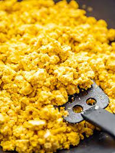

Scramble Tofu

Description
Scramble tofu is a vegan alternative to a regular scramble that is full of flavour and easy to make.
Ingredients
- Soft Tofu - 1 Block
- Onion - 1 Half
- Garlic - 2-3 cloves
- White Mushrooms - 4-5
- Turmeric - 1tsp
- Oregano to taste
- Salt and Pepper to taste
Steps
- Fry the onion till brown.
- Add mushrooms and garlic. Fry for a few minutes.
- Add tofu and seasoning.
- Fry for 7-10mins.
- Plate it and enjoy it.
Extras
Can be served with toast of bread, sliced avocado, baked beans or salad. Enjoy!
Back to home page